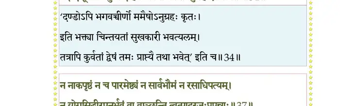
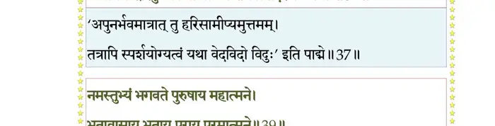
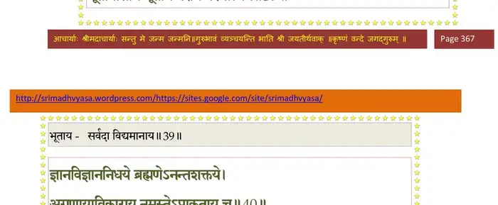
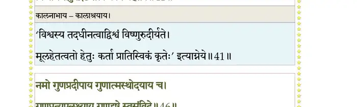
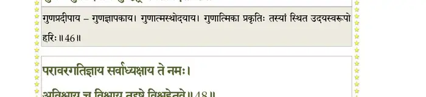
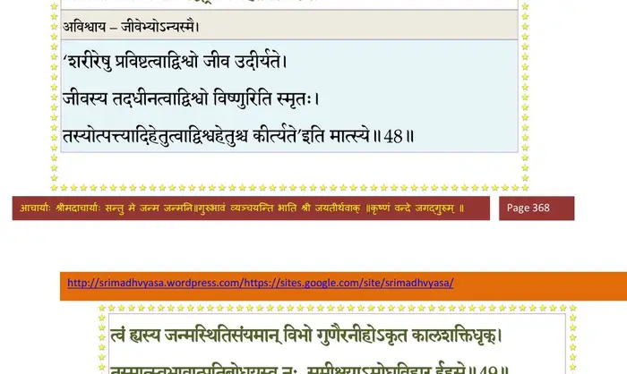
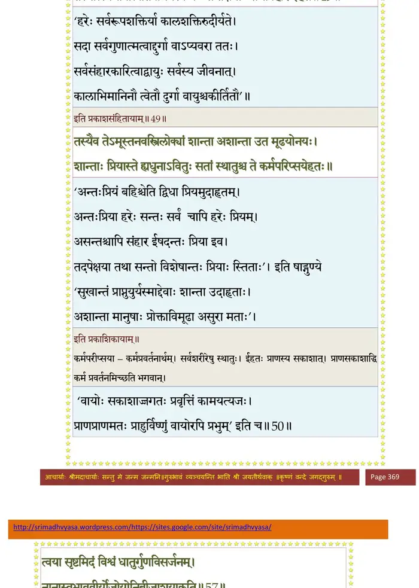
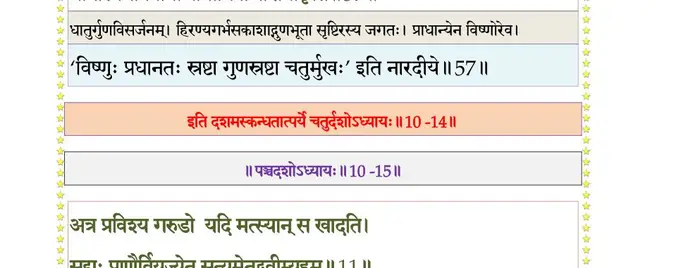

स्कन्ध 10 · अध्याय 14
श्लोक १
श्रीशुक उवाच–
विलोक्य दूषितां कृष्णां कृष्णः कृष्णाहिना विभुः ।
तस्या विशुद्धिमन्विच्छन् सर्पं तमुदवासयत्।। १ ।।
विलोक्य दूषितां कृष्णां कृष्णः कृष्णाहिना विभुः ।
तस्या विशुद्धिमन्विच्छन् सर्पं तमुदवासयत्।। १ ।।
श्लोक २
राजोवाच–
कथमन्तर्जलेऽगाधे न्यगृह्णाद् भगवानहिम् ।
स वै बहुयुगावासी यथाऽऽसीद् विप्र कथ्यताम्।। २ ।।
कथमन्तर्जलेऽगाधे न्यगृह्णाद् भगवानहिम् ।
स वै बहुयुगावासी यथाऽऽसीद् विप्र कथ्यताम्।। २ ।।
श्लोक ३
ब्रह्मन् भगवतस्तस्य भूम्नः स्वच्छन्दवर्तिनः ।
गोपालोदारचरितं कस्तृप्येतामृतं जुषन् ।। ३ ।।
गोपालोदारचरितं कस्तृप्येतामृतं जुषन् ।। ३ ।।
श्लोक ४
श्रीशुक उवाच–
कालिन्द्यां कालियस्यासीद् ह्रदः कश्चिद् विषाग्निना ।
श्रप्यमाणपयो यस्मिन् पतन्त्युपरिगाः खगाः ।। ४ ।।
कालिन्द्यां कालियस्यासीद् ह्रदः कश्चिद् विषाग्निना ।
श्रप्यमाणपयो यस्मिन् पतन्त्युपरिगाः खगाः ।। ४ ।।
श्लोक ५
विप्लुष्मता विषोदोर्मिमारुतेनाभिमर्शिताः ।
म्रियन्ते तीरगा यस्य प्राणिनः स्थिरजङ्गमाः ।। ५ ।।
म्रियन्ते तीरगा यस्य प्राणिनः स्थिरजङ्गमाः ।। ५ ।।
श्लोक ६
तं चण्डवेगविषवीर्यमवेक्ष्य तेन
दुष्टां नदीं च खलसंयमनावतारः ।
कृष्णः कदम्बमधिरुह्य ततोऽतितुङ्गा-
दास्फोट्य गाढरसनो न्यपतद् विषोदे ।। ६ ।।
दुष्टां नदीं च खलसंयमनावतारः ।
कृष्णः कदम्बमधिरुह्य ततोऽतितुङ्गा-
दास्फोट्य गाढरसनो न्यपतद् विषोदे ।। ६ ।।
श्लोक ७
सार्पो ह्रदः पुरुषसारनिपातवेग-
सङ्क्षोभितोरगविषोच्छ्वसिताम्बुराशिः ।
विष्वक् प्लुतो विषकषायविभीषणोर्मि-
भीमो धनुःशतमनन्तबलस्य किं तत्।। ७ ।।
सङ्क्षोभितोरगविषोच्छ्वसिताम्बुराशिः ।
विष्वक् प्लुतो विषकषायविभीषणोर्मि-
भीमो धनुःशतमनन्तबलस्य किं तत्।। ७ ।।
श्लोक ८
तस्मिन् ह्रदे विहरतो भुजदण्डघूर्ण-
वार्घोषमङ्ग वरवारणविक्रमस्य ।
आश्रुत्य तत् स्वसदनाभिभवं ससैन्य-
श्चक्षुःश्रवाः समसरत् तममृष्यमाणः ।। ८ ।।
वार्घोषमङ्ग वरवारणविक्रमस्य ।
आश्रुत्य तत् स्वसदनाभिभवं ससैन्य-
श्चक्षुःश्रवाः समसरत् तममृष्यमाणः ।। ८ ।।
श्लोक ९
तं प्रेक्षणीयसुकुमारघनावदातं श्रीवत्सपीतवसनं स्मितसुन्दरास्यम् ।
क्रीडन्तमप्रतिभयं कमलोदराङ्घ्रिं सन्दश्य मर्मसु रुषा भुजया चछाद ।। ९ ।।
क्रीडन्तमप्रतिभयं कमलोदराङ्घ्रिं सन्दश्य मर्मसु रुषा भुजया चछाद ।। ९ ।।
श्लोक १०
तं नागभोगपरिवीतमदृष्टचेष्टं
मालोक्य तत्प्रियसखाः पशुपा भृशार्ताः ।
कृष्णेऽर्पितात्मसुहृदर्थकलत्रकामा
दुःखानुशोकभयमूढधियो निपेतुः।। १० ।।
मालोक्य तत्प्रियसखाः पशुपा भृशार्ताः ।
कृष्णेऽर्पितात्मसुहृदर्थकलत्रकामा
दुःखानुशोकभयमूढधियो निपेतुः।। १० ।।
श्लोक ११
गावो वृषा वत्सतर्यः क्रन्दमानाः सुदुःखिताः ।
कृष्णे न्यस्तेक्षणा भीता रुदन्त्य इव तस्थिरे ।। ११ ।।
कृष्णे न्यस्तेक्षणा भीता रुदन्त्य इव तस्थिरे ।। ११ ।।
श्लोक १२
अथ व्रजे महोत्पातास्त्रिविधा ह्यतिदारुणाः ।
उत्पेतुर्दिवि भुव्यात्मन्यासन्नभयशंसिनः ।। १२ ।।
उत्पेतुर्दिवि भुव्यात्मन्यासन्नभयशंसिनः ।। १२ ।।
श्लोक १३
तानालक्ष्य भयोद्विग्ना गोपा नन्दपुरोगमाः ।
विना रामेण गाः कृष्णं ज्ञात्वा चारयितुं गतम्।। १३ ।।
विना रामेण गाः कृष्णं ज्ञात्वा चारयितुं गतम्।। १३ ।।
श्लोक १४
तैर्दुर्निमित्तैर्निधनं मत्वा प्राप्तमतद्विदः ।
तत्प्राणास्तन्मनस्काश्च दुःखशोकभयातुराः।। १४ ।।
तत्प्राणास्तन्मनस्काश्च दुःखशोकभयातुराः।। १४ ।।
श्लोक १५
आबालवृद्धवनिताः सर्वेऽङ्ग पशुवृत्तयः ।
निर्जग्मुर्गोकुलाद् दीनाः कृष्णदर्शनलालसाः ।। १५ ।।
निर्जग्मुर्गोकुलाद् दीनाः कृष्णदर्शनलालसाः ।। १५ ।।
श्लोक १६
तांस्तथा कातरान् वीक्ष्य भगवान् माधवो बलः ।
प्रहस्य किञ्चिन्नोवाच प्रभावज्ञोऽनुजस्य सः ।। १६ ।।
प्रहस्य किञ्चिन्नोवाच प्रभावज्ञोऽनुजस्य सः ।। १६ ।।
श्लोक १७
तेऽन्वेषमाणा दयितं कृष्णं सूचितया पदैः ।
भगवल्लक्षणैर्जग्मुः पदव्या यमुनातटम् ।। १७ ।।
भगवल्लक्षणैर्जग्मुः पदव्या यमुनातटम् ।। १७ ।।
श्लोक १८
ते तत्र तत्राब्जयवाङ्कुशाशनिध्वजोपपन्नानि पदानि विश्पतेः ।
मार्गे गवामन्यपदान्तरान्तरे निरीक्षमाणा ययुरङ्ग सत्वराः।। १८ ।।
मार्गे गवामन्यपदान्तरान्तरे निरीक्षमाणा ययुरङ्ग सत्वराः।। १८ ।।
श्लोक १९
अन्तर्ह्रदे भुजगभोगपरीतमारात् कृष्णं निरीहमुपलक्ष्य जलाशयान्ते ।
गोपांश्च मूढधिषणान् परितः पशूंश्च सङ्क्रन्दतः परमकश्मलमापुरार्ताः।। १९ ।।
गोपांश्च मूढधिषणान् परितः पशूंश्च सङ्क्रन्दतः परमकश्मलमापुरार्ताः।। १९ ।।
श्लोक २०
गोप्योऽनुरक्तमनसो भगवत्यनन्ते तत्सौहृदस्मितविलोकगिरः स्मरन्त्यः ।
ग्रस्तेऽहिना प्रियतमे भृशदुःखतप्ताः शून्यं प्रियव्यतिहृतं ददृशुस्त्रिलोकम् ।। २० ।।
ग्रस्तेऽहिना प्रियतमे भृशदुःखतप्ताः शून्यं प्रियव्यतिहृतं ददृशुस्त्रिलोकम् ।। २० ।।
श्लोक २१
ताः कृष्णमातरमपत्यमनुप्रविष्टां
तुल्यव्यथाः समनुगृह्य शुचः स्रवन्त्यः ।
त्रस्ता व्रजप्रियकथाः कथयन्त्य आसन्
कृष्णाननेऽर्पितदृशो मृतकप्रतीताः ।। २१ ।।
तुल्यव्यथाः समनुगृह्य शुचः स्रवन्त्यः ।
त्रस्ता व्रजप्रियकथाः कथयन्त्य आसन्
कृष्णाननेऽर्पितदृशो मृतकप्रतीताः ।। २१ ।।
श्लोक २२
कृष्णप्राणान् निर्विशतो नन्दादीन् वीक्ष्य तं हृदम् ।
प्रत्यषेधत् स भगवान् रामः कृष्णानुभाववित् ।। २२ ।।
प्रत्यषेधत् स भगवान् रामः कृष्णानुभाववित् ।। २२ ।।
श्लोक २३
इत्थं स्वगोकुलमनन्यगतिं निरीक्ष्य
सस्त्रीकुमारमतिदुःखितमात्महेतोः ।
आज्ञाय मर्त्यपदवीमनुवर्तमानः स्थित्वा
मुहूर्तमुदतिष्ठदुरङ्गबन्धात् ।। २३ ।।
सस्त्रीकुमारमतिदुःखितमात्महेतोः ।
आज्ञाय मर्त्यपदवीमनुवर्तमानः स्थित्वा
मुहूर्तमुदतिष्ठदुरङ्गबन्धात् ।। २३ ।।
श्लोक २४
तत्प्रथ्यमानवपुषा व्यथितात्मभोग-
स्त्यक्त्वोन्नमय्य कुपितः स्वफणान् भुजङ्गः ।
तस्थौ श्वसन् श्वसनरन्ध्रविषाम्बरीष-
स्तब्धेक्षणोल्मुकमुखो हरिमीक्षमाणः ।। २४ ।।
स्त्यक्त्वोन्नमय्य कुपितः स्वफणान् भुजङ्गः ।
तस्थौ श्वसन् श्वसनरन्ध्रविषाम्बरीष-
स्तब्धेक्षणोल्मुकमुखो हरिमीक्षमाणः ।। २४ ।।
श्लोक २५
तं जिह्वया द्विशिखया परिलेलिहानं
द्वे सृक्विणी ह्यतिकरालविषाग्निदृष्टिम् ।
क्रीडन्नमुं परिससार यथा खगेन्द्रो
बभ्राम सोऽप्यपसरन् प्रसमीक्षमाणः।। २५ ।।
द्वे सृक्विणी ह्यतिकरालविषाग्निदृष्टिम् ।
क्रीडन्नमुं परिससार यथा खगेन्द्रो
बभ्राम सोऽप्यपसरन् प्रसमीक्षमाणः।। २५ ।।
श्लोक २६
एवं परिभ्रमहतौजसमुन्नतांसमानम्य तत्पृथुशिरस्यधिरूढ आद्यः ।
तन्मूर्धरत्ननिकरस्पर्शातिताम्रपादाम्बुजोऽमृतकलाधिगुरुर्ननर्त ।। २६ ।।
तन्मूर्धरत्ननिकरस्पर्शातिताम्रपादाम्बुजोऽमृतकलाधिगुरुर्ननर्त ।। २६ ।।
श्लोक २७
तं नर्तुमुद्यतमवेक्ष्य तदा तदीयगन्धर्वसिद्धसुरचारणदेववध्वः ।
प्रीत्या मृदङ्गपणवानकवाद्यगीतपुष्पोपहारनुतिभिः सहसोपसेदुः।। २७ ।।
प्रीत्या मृदङ्गपणवानकवाद्यगीतपुष्पोपहारनुतिभिः सहसोपसेदुः।। २७ ।।
श्लोक २८
यद्यच्छिरो न नमते गरकालशीर्ष्णस्त-
त्तन्ममर्द खलदण्डधरोऽङ्घ्रिपातैः ।
क्षीणे बले भगवतोल्बणमाशु वक्त्राद्
रक्तं वमन् परमकश्मलमाप नागः।। २८ ।।
त्तन्ममर्द खलदण्डधरोऽङ्घ्रिपातैः ।
क्षीणे बले भगवतोल्बणमाशु वक्त्राद्
रक्तं वमन् परमकश्मलमाप नागः।। २८ ।।
श्लोक २९
तस्याक्षिभिर्गरलमुद्वमतः शिरस्सु यद्यत्
समुन्नमति निःश्वसतो रुषोच्चैः ।
नृत्यन् पदाऽनुनमयन् स यदा बभूव
पुष्पैः स्तुतोऽथ भगवान् पुरुषः पुराणः ।। २९ ।।
समुन्नमति निःश्वसतो रुषोच्चैः ।
नृत्यन् पदाऽनुनमयन् स यदा बभूव
पुष्पैः स्तुतोऽथ भगवान् पुरुषः पुराणः ।। २९ ।।
श्लोक ३०
तच्चित्रताण्डवविरुग्णफणातपत्रो रक्तं मुखैरुरु वमन् नृप भग्नगात्रः ।
स्मृत्वा चराचरगुरुं पुरुषं पुराणं नारायणं तमरणं मनसा जगाम ।। ३० ।।
स्मृत्वा चराचरगुरुं पुरुषं पुराणं नारायणं तमरणं मनसा जगाम ।। ३० ।।
श्लोक ३१
कृष्णस्य गर्भजगतोऽतिभरावसन्नपार्ष्णिप्रहारपरिरुग्णफणातपत्रम् ।
दृष्ट्वाऽहिराजमुपसेदुरमुष्य पत्न्य आर्ताः श्लथद्वसनभूषणकेशबन्धाः ।। ३१ ।।
दृष्ट्वाऽहिराजमुपसेदुरमुष्य पत्न्य आर्ताः श्लथद्वसनभूषणकेशबन्धाः ।। ३१ ।।
श्लोक ३२
तं ता विपन्नमनसोऽथ पुरस्कृतार्हाः कायं निधाय भुवि भूतपतिं प्रणेमुः ।
साध्व्यः कृताञ्जलिपुटाः परमस्य भर्तुर्मोक्षेच्छवः शरणदं शरणं प्रपन्नाः ।। ३२ ।।
साध्व्यः कृताञ्जलिपुटाः परमस्य भर्तुर्मोक्षेच्छवः शरणदं शरणं प्रपन्नाः ।। ३२ ।।
श्लोक ३३
नागपत्न्य ऊचुः–
न्याय्यो हि दण्डः कृतकिल्बिषेऽस्मिन् तवावतारः खलनिग्रहाय ।
रिपोः सुतानामपि तुल्यदृष्टेः धत्से दमं फलमेवानुशंस्यम्।। ३३ ।।
न्याय्यो हि दण्डः कृतकिल्बिषेऽस्मिन् तवावतारः खलनिग्रहाय ।
रिपोः सुतानामपि तुल्यदृष्टेः धत्से दमं फलमेवानुशंस्यम्।। ३३ ।।
श्लोक ३४
अनुग्रहोऽयं भवता कृतो हि नो दण्डोऽसतां ते खलु कल्मषापहः ।
यद् दन्दशूकत्वममुष्य देहिनः क्रोधोऽपि तेऽनुग्रह एव सम्मतः।। ३४ ।।
यद् दन्दशूकत्वममुष्य देहिनः क्रोधोऽपि तेऽनुग्रह एव सम्मतः।। ३४ ।।
भागवततात्पर्यनिर्णय

श्लोक ३५
तपः सुतप्तं किमनेन पूर्वं निरस्तमानेन च मानदेन ।
धर्मोऽथवा सर्वजनानुकम्पया यतो भवांस्तुष्यति सर्वजीवः।। ३५ ।।
धर्मोऽथवा सर्वजनानुकम्पया यतो भवांस्तुष्यति सर्वजीवः।। ३५ ।।
श्लोक ३६
कस्यानुभावोऽस्य न देव विद्महे तवाङ्घ्रिरेणुस्पर्शाधिकारः ।
यद्वाञ्छया श्रीर्ललनाऽचरत् तपो विहाय कामान् सुचिरं धृतव्रता।। ३६ ।।
यद्वाञ्छया श्रीर्ललनाऽचरत् तपो विहाय कामान् सुचिरं धृतव्रता।। ३६ ।।
श्लोक ३७
न नाकपृष्ठं न च पारमेष्ठ्यं न सार्वभौमं न रसाधिपत्यम् ।
न योगसिद्धीरपुनर्भवं वा वाञ्छन्ति त्वत्पादरजःप्रपन्नाः।। ३७ ।।
न योगसिद्धीरपुनर्भवं वा वाञ्छन्ति त्वत्पादरजःप्रपन्नाः।। ३७ ।।
भागवततात्पर्यनिर्णय

श्लोक ३८
तदीश नाथाप दुरापमन्यैः तमोजनिः क्रोधवशोऽप्यनीशः ।
संसारचक्रे भ्रमतः शरीरिणो यदीप्सितं स्याद्धि भवत्समक्षम्।। ३८ ।।
संसारचक्रे भ्रमतः शरीरिणो यदीप्सितं स्याद्धि भवत्समक्षम्।। ३८ ।।
श्लोक ३९
नमस्तुभ्यं भगवते पुरुषाय महात्मने ।
भूतावासाय भूताय पराय परमात्मने।। ३९ ।।
भूतावासाय भूताय पराय परमात्मने।। ३९ ।।
भागवततात्पर्यनिर्णय

श्लोक ४०
ज्ञानविज्ञाननिधये ब्रह्मणेऽनन्तशक्तये ।
अगुणायाविकाराय नमस्तेऽप्राकृताय च ।। ४० ।।
अगुणायाविकाराय नमस्तेऽप्राकृताय च ।। ४० ।।
भागवततात्पर्यनिर्णय
श्लोक ४१
कालाय कालनाभाय कालावयवसाक्षिणे ।
विश्वाय तदुपद्रष्टे्रे तत्कर्त्रे विश्वहेतवे ।। ४१ ।।
विश्वाय तदुपद्रष्टे्रे तत्कर्त्रे विश्वहेतवे ।। ४१ ।।
भागवततात्पर्यनिर्णय

श्लोक ४२
भूतमात्रेन्द्रियप्राणमनोबुद्ध्याशयात्मने ।
निर्गुणेनाभिमानेन गूढस्वात्मानुभूतये।। ४२ ।।
निर्गुणेनाभिमानेन गूढस्वात्मानुभूतये।। ४२ ।।
श्लोक ४३
नमोऽन्ताय सूक्ष्माय कूटस्थाय विपश्चिते ।
नानावादानुरोधाय वाच्यवाचकशक्तये।। ४३ ।।
नानावादानुरोधाय वाच्यवाचकशक्तये।। ४३ ।।
श्लोक ४४
नमः प्रमाणमूलाय कवये शास्त्रयोनये ।
प्रवृत्ताय निवृत्ताय निगमाय नमो नमः ।। ४४ ।।
प्रवृत्ताय निवृत्ताय निगमाय नमो नमः ।। ४४ ।।
श्लोक ४५
नमः कृष्णाय रामाय वसुदेवसुताय च ।
प्रद्युम्नायानिरुद्धाय सात्वतां पतये नमः ।। ४५ ।।
प्रद्युम्नायानिरुद्धाय सात्वतां पतये नमः ।। ४५ ।।
श्लोक ४६
नमो गुणप्रदीपाय गुणात्मस्थोदयाय च ।
गुणप्रत्युपलक्ष्याय गुणद्रष्टे्र स्वसंविदे ।। ४६ ।।
गुणप्रत्युपलक्ष्याय गुणद्रष्टे्र स्वसंविदे ।। ४६ ।।
भागवततात्पर्यनिर्णय

श्लोक ४७
अव्याकृतविहाराय सर्वव्याकृतसिद्धये ।
हृषीकेश नमस्तेऽस्तु मुनये मौनशालिने।। ४७ ।।
हृषीकेश नमस्तेऽस्तु मुनये मौनशालिने।। ४७ ।।
श्लोक ४८
परावरगतिज्ञाय सर्वाध्यक्षाय ते नमः ।
अविश्वाय च विश्वाय तद्द्रष्ट्रे विश्वहेतवे।। ४८ ।।
अविश्वाय च विश्वाय तद्द्रष्ट्रे विश्वहेतवे।। ४८ ।।
भागवततात्पर्यनिर्णय

श्लोक ४९
त्वं ह्यस्य जन्मस्थितिसंयमान् विभो गुणैरनीहोऽकृतकालशक्तिधृक् ।
तस्मात् स्वभावात् प्रतिबोधयस्व नः समीक्षयाऽमोघविहार ईहसे।। ४९ ।।
तस्मात् स्वभावात् प्रतिबोधयस्व नः समीक्षयाऽमोघविहार ईहसे।। ४९ ।।
भागवततात्पर्यनिर्णय

श्लोक ५०
तस्यैव तेऽमूस्तनवस्त्रिलोक्यां शान्ता अशान्ता उत मूढयोनयः ।
शान्ताः प्रियास्ते ह्यधुनाऽवितुः सतां स्थातुश्च ते कर्मपरीप्सयेहतः ।। ५० ।।
शान्ताः प्रियास्ते ह्यधुनाऽवितुः सतां स्थातुश्च ते कर्मपरीप्सयेहतः ।। ५० ।।
श्लोक ५१
अपराधः सकृद् भर्त्रा सोढव्यः स्वप्रजाकृतः ।
क्षन्तुमर्हसि शान्तात्मन् मूढस्य त्वामजानतः।। ५१ ।।
क्षन्तुमर्हसि शान्तात्मन् मूढस्य त्वामजानतः।। ५१ ।।
श्लोक ५२
अनुगृह्णीष्व भगवन् प्राणांस्त्यजति पन्नगः ।
स्त्रीणां नः साधु शोच्यानां पतिःप्राणः प्रदीयताम्।। ५२ ।।
स्त्रीणां नः साधु शोच्यानां पतिःप्राणः प्रदीयताम्।। ५२ ।।
श्लोक ५३
विधेहि ते किङ्करीणामनुष्ठेयं तवाज्ञया ।
यच्छ्रद्धयाऽनुतिष्ठन् वै मुच्यते स पुमान् भयात्।। ५३ ।।
यच्छ्रद्धयाऽनुतिष्ठन् वै मुच्यते स पुमान् भयात्।। ५३ ।।
श्लोक ५४
श्रीशुक उवाच–
इत्थं स नागपत्नीभिर्भगवान् समभिष्टुतः ।
मूर्च्छितं भग्नशिरसं विससर्जाङ्घ्रिकुट्टनैः ।। ५४ ।।
इत्थं स नागपत्नीभिर्भगवान् समभिष्टुतः ।
मूर्च्छितं भग्नशिरसं विससर्जाङ्घ्रिकुट्टनैः ।। ५४ ।।
श्लोक ५५
प्रतिलब्धेन्द्रियप्राणः कालियः शनकैर्हरिम् ।
कृच्छ्रात् समुच्छ्वसन् दीनः कृष्णं प्राह कृताञ्जलिः।। ५५ ।।
कृच्छ्रात् समुच्छ्वसन् दीनः कृष्णं प्राह कृताञ्जलिः।। ५५ ।।
श्लोक ५६
वयं खलाः सहोत्पत्त्या तामसा दीर्घमन्यवः ।
स्वभावो दुस्त्यजो नाथ भूतानां यदसद्ग्रहः।। ५६ ।।
स्वभावो दुस्त्यजो नाथ भूतानां यदसद्ग्रहः।। ५६ ।।
श्लोक ५७
त्वया सृष्टमिदं विश्वं धातुर्गुणविसर्जनम् ।
नानास्वभाववीर्यौजोयोनिबीजाशयाकृति।। ५७ ।।
नानास्वभाववीर्यौजोयोनिबीजाशयाकृति।। ५७ ।।
भागवततात्पर्यनिर्णय

श्लोक ५८
वयं च तत्र भगवन् सर्पा जात्युरुमन्यवः ।
कथं त्यजामस्त्वन्मायां दुस्त्यजां मोहिताः प्रभो।। ५८ ।।
कथं त्यजामस्त्वन्मायां दुस्त्यजां मोहिताः प्रभो।। ५८ ।।
श्लोक ५९
भवान् हि कारणं तत्र सर्वज्ञ जगदीश्वर ।
अनुग्रहं निग्रहं वा मन्यसे तद् विधेहि नः।। ५९ ।।
अनुग्रहं निग्रहं वा मन्यसे तद् विधेहि नः।। ५९ ।।
श्लोक ६०
श्रीशुक उवाच–
इत्याकर्ण्य वचः प्राह भगवान् कार्यमानुषः ।
नात्र स्थेयं त्वया सर्प समुद्रं याहि माचिरम्।। ६० ।।
इत्याकर्ण्य वचः प्राह भगवान् कार्यमानुषः ।
नात्र स्थेयं त्वया सर्प समुद्रं याहि माचिरम्।। ६० ।।
श्लोक ६१
सज्ञात्यपत्यदाराढ्यो गोनृभिर्भुज्यते नदी ।
य एतत् संस्मरेन्मर्त्यस्तुभ्यं मदनुशासनम् ।
कीर्तयन्नुभयोः सन्ध्योर्न युष्मद्भयमाप्नुयात्।। ६१ ।।
य एतत् संस्मरेन्मर्त्यस्तुभ्यं मदनुशासनम् ।
कीर्तयन्नुभयोः सन्ध्योर्न युष्मद्भयमाप्नुयात्।। ६१ ।।
श्लोक ६२
योऽस्मिन् स्नात्वा ममाक्रीडे देवादींस्तर्पयेज्जलैः ।
उपोष्य मां स्मरन्नर्चेत् सर्वपापैः प्रमुच्यते।। ६२ ।।
उपोष्य मां स्मरन्नर्चेत् सर्वपापैः प्रमुच्यते।। ६२ ।।
श्लोक ६३
द्वीपं रमणकं हित्वा ह्रदमेतमुपाश्रितः ।
यद्भयात् स सुपर्णस्त्वां नाऽद्यान्मत्पादलाञ्छनम्।। ६३ ।।
यद्भयात् स सुपर्णस्त्वां नाऽद्यान्मत्पादलाञ्छनम्।। ६३ ।।
श्लोक ६४
एवमुक्तो भगवता कृष्णेनाद्भुतकर्मणा ।
तं पूजयामास मुदा नागपत्न्यश्च सादरम्।। ६४ ।।
तं पूजयामास मुदा नागपत्न्यश्च सादरम्।। ६४ ।।
श्लोक ६५
दिव्याम्बरस्रङ्मणिभिः परार्घ्यैरपि भूषणैः ।
दिव्यगन्धानुलेपैश्च महत्योत्पलमालया।। ६५ ।।
दिव्यगन्धानुलेपैश्च महत्योत्पलमालया।। ६५ ।।
श्लोक ६६
पूजयित्वा जगन्नाथं प्रसाद्य गरुडध्वजम्।। ६६ ।।
श्लोक ६७
नागराजोऽभ्यनुज्ञातः परिक्रम्य प्रणम्य च ।
सकलत्रसुहृत्पुत्रो द्वीपमब्धेर्जगाम ह।। ६७ ।।
सकलत्रसुहृत्पुत्रो द्वीपमब्धेर्जगाम ह।। ६७ ।।
श्लोक ६८
तदैव साऽमृतजला यमुना निर्विषाऽभवत् ।
अनुग्रहाद् भगवतः क्रीडामनुजरूपिणः।। ६८ ।।
अनुग्रहाद् भगवतः क्रीडामनुजरूपिणः।। ६८ ।।
।। इति श्रीमद्भागवते दशमस्कन्धे चतुर्दशोऽध्यायः ।।